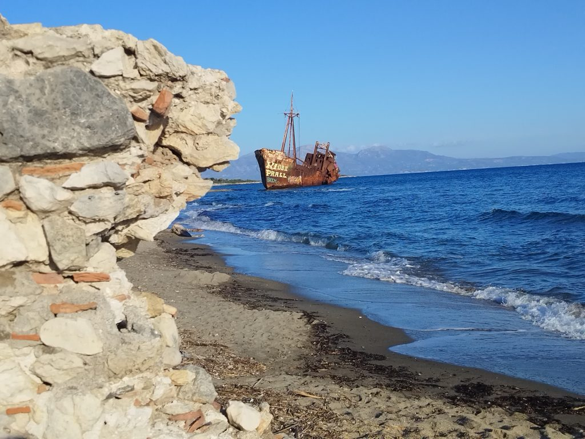
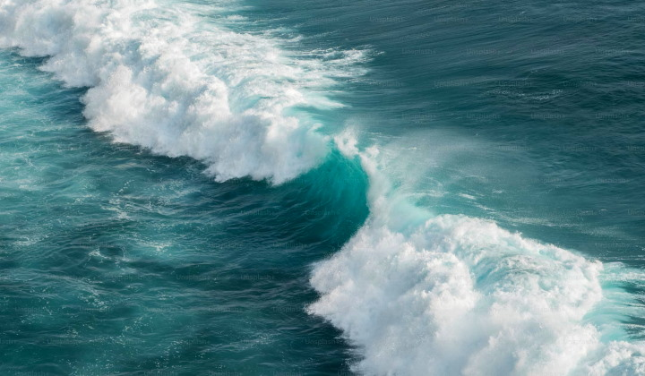

STARODAVNI MITI MORJA
Grška mitologija: Pont je bil predolimpijski bog morja, sin Gaje. Pozejdon je vladal morjem s trizobom. Iz morske pene se je rodila Afrodita.
Sumerska mitologija: Nammu je bila boginja morja (Engur), ki je rodila prve bogove.
Slovenske in obmorske legende: Legende pripovedujejo o Argonatih, ki so pluli preko Jadrana, in o nastanku otoka Krk, ko so se zlate ovce spremenile v kamen.
Moryana: Mitološko bitje, ki predstavlja starodavni šepet morja in povezavo z naravo.
Resničnost mitov: Številne legende o potopih in nenadnih spremembah morske gladine imajo podlago v resničnih dogodkih, na primer v zgodovini Črnega morja.


MITI MORJA NISO LE PRAVLJICE.Mnogi temeljijo na resničnih naravnih pojavih,kot so cunamiji,orjaški lignji ali nenadni dvigi morske gladine.